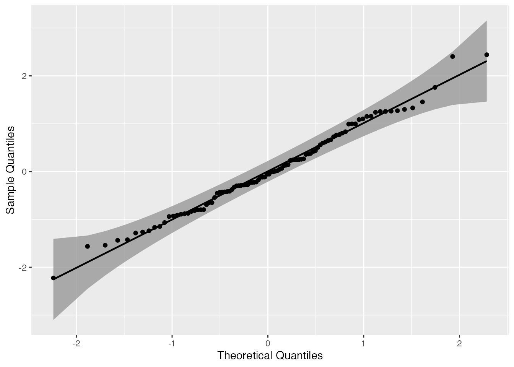
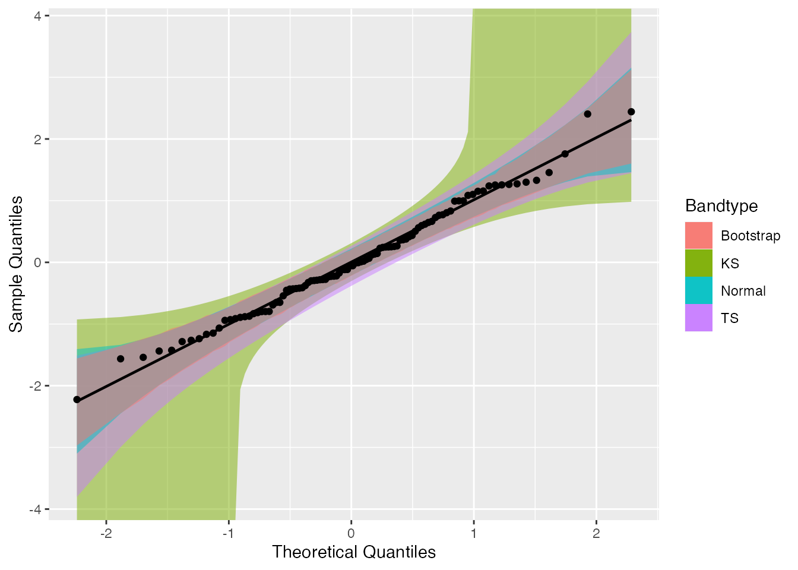
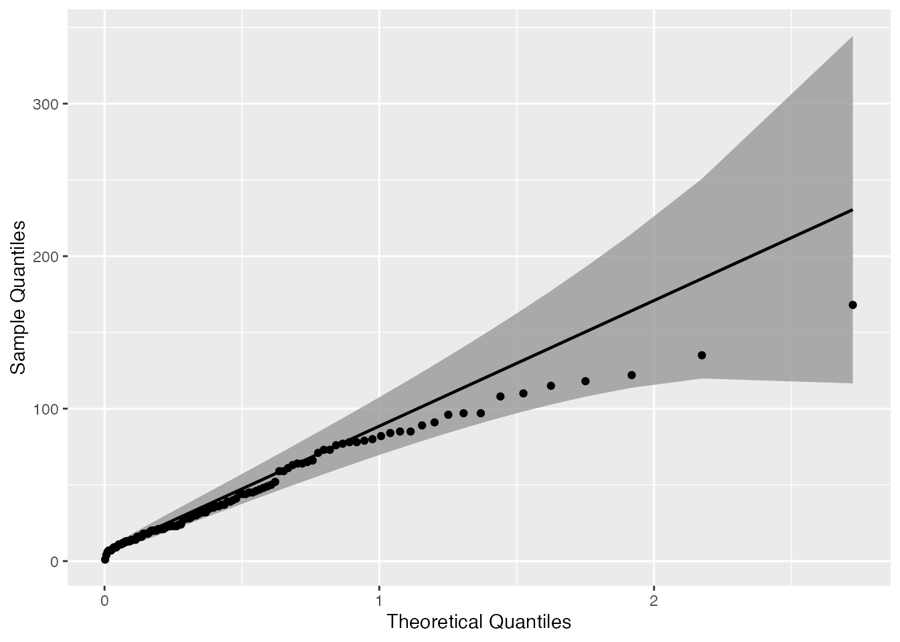
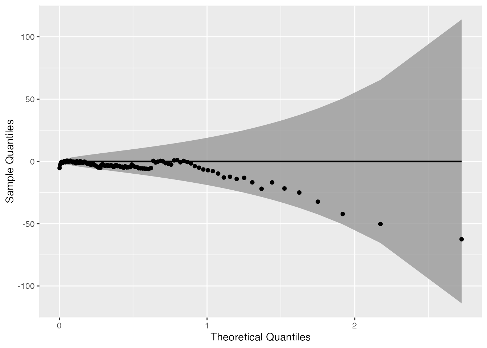
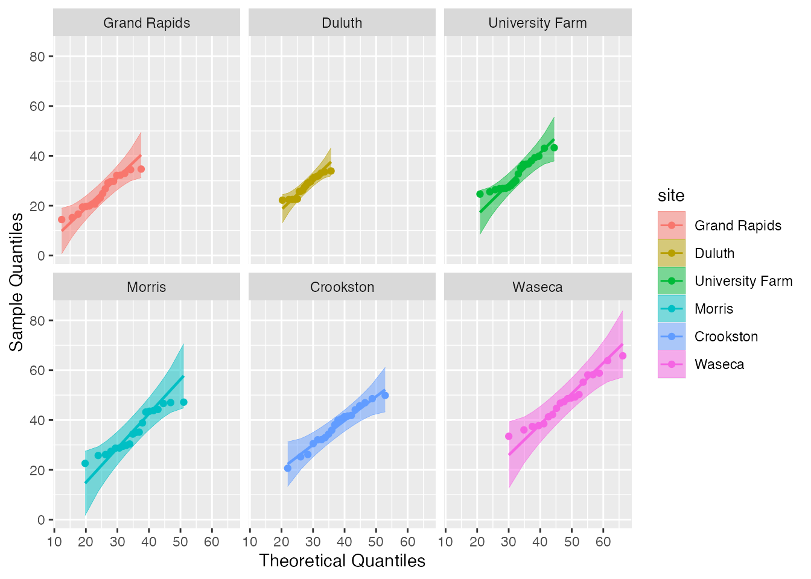
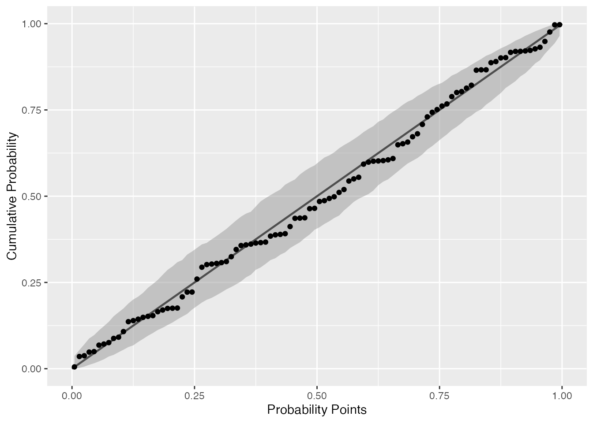
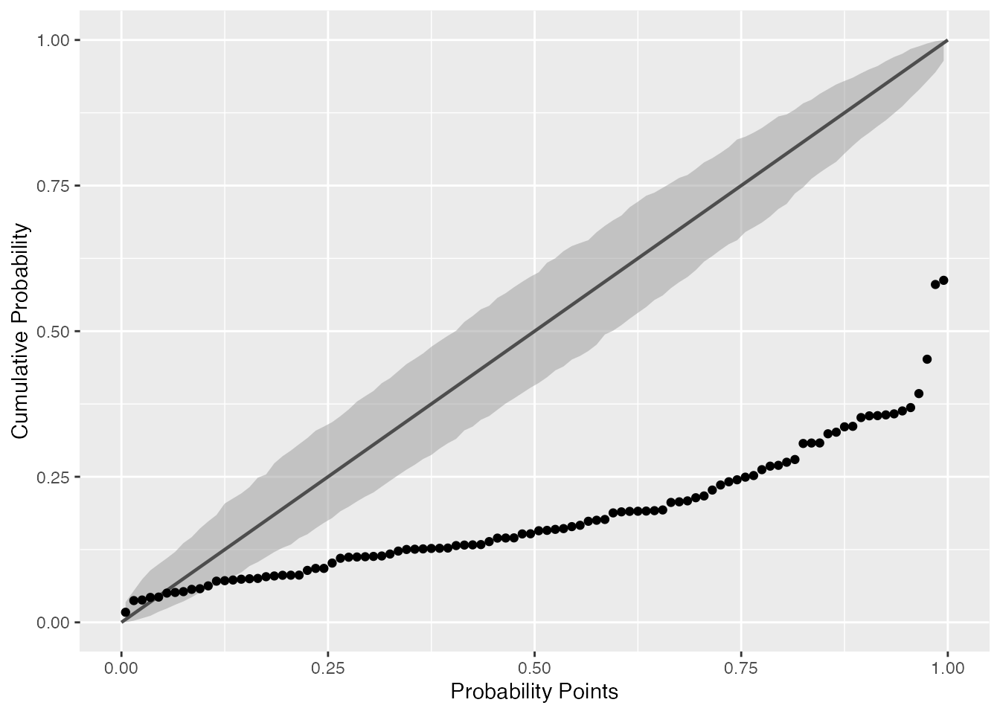
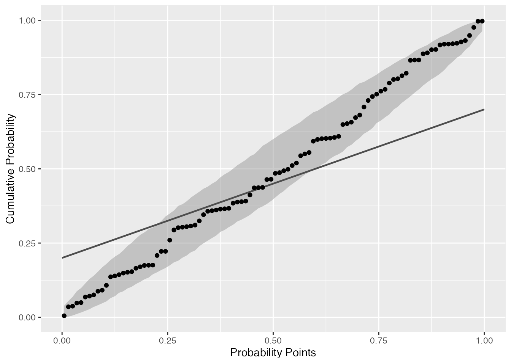
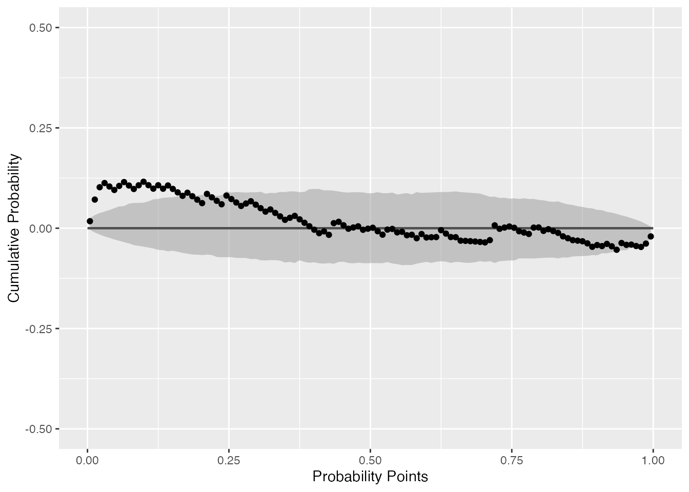

vignettes/introduction.Rmd
introduction.RmdThis vignette presents a in-depth overview of the qqplotr package.
The qqplotr package extends some ggplot2 functionalities by permitting the drawing of both quantile-quantile (Q-Q) and probability-probability (P-P) points, lines, and confidence bands. The functions of this package also allow a detrend adjustment of the plots, proposed by Thode (2002) to help reduce visual bias when assessing the results.
If you would like to install the development version of qqplotr, you may do so by using, for example, devtools:
If, instead, you wish to install the stable CRAN version, then simply do:
The functions of this package, implemeneted as Stats from ggplot2, are divided into two groups: (1) Q-Q and (2) P-P plots.
Both groups are composed of three functions: point, line, and band. Those Stats complement each other when drawn together, but they may also be plotted independently.
Below we will give an overview of all those Stats and, further in the document, we will present some usage examples.
stat_qq_point This is a modified version of ggplot2::stat_qq with some parameters adjustments and a new option to detrend the points.stat_qq_line Draws a reference line based on the data quantiles, as in stats::qqline.stat_qq_band Draws confidence bands based on three methods: "pointwise", "boot", "ks", and "ts":
"pointwise" constructs simultaneous confidence bands based on the normal distribution;"boot" creates pointwise confidence bands based on a parametric boostrap;"ks" constructs simultaneous confidence bands based on an inversion of the Kolmogorov-Smirnov test;"ts" constructs tail-sensitive confidence bands, as proposed by Aldor-Noiman et al. (2013).In order to facilitate the visualization of multiple Q-Q band methods at the same time, the geom_qq_band Geom was also implemented. Its usage will be illustrated further below.
stat_pp_point Plots cumulative probabilities versus probability points. The cumulative probability function is constructed with the sample data, and then evaluated at each probability point.stat_pp_line Draws a reference identity line (\(x = y\)).stat_pp_band Draws confidence bands. For now, only the bootstrap version ("boot") is available.Start by loading the qqplotr package:
Let’s start by simulating from a standard Normal distribution:
Then, we use the provided stat_qq_* functions to construct a complete Q-Q plot with the points, reference line, and the confidence bands. As default, the standard Q-Q Normal plot with Normal confidence bands is constructed:
gg <- ggplot(data = smp, mapping = aes(sample = norm)) +
stat_qq_band() +
stat_qq_line() +
stat_qq_point() +
labs(x = "Theoretical Quantiles", y = "Sample Quantiles")
gg
As we can see, all the points lie within the confidence bands, which is expected for the given distribution.
As previously described in the Details section, three confidence bands constructs are available, which may be adjusted with the bandType parameter. Here, we may use the geom_qq_band instead of stat_qq_band, which permits a little more flexibility with the graphical parameters when constructing and visualizing different confidence bands.
gg <- ggplot(data = smp, mapping = aes(sample = norm)) +
geom_qq_band(bandType = "ks", mapping = aes(fill = "KS"), alpha = 0.5) +
geom_qq_band(bandType = "ts", mapping = aes(fill = "TS"), alpha = 0.5) +
geom_qq_band(bandType = "pointwise", mapping = aes(fill = "Normal"), alpha = 0.5) +
geom_qq_band(bandType = "boot", mapping = aes(fill = "Bootstrap"), alpha = 0.5) +
stat_qq_line() +
stat_qq_point() +
labs(x = "Theoretical Quantiles", y = "Sample Quantiles") +
scale_fill_discrete("Bandtype")
gg
To construct Q-Q plots with other theoretical distributions we may use the distribution parameter. Specific distributional parameters may be passed as a list to the dparams paramater.
Note that distributional parameters have little impact when building Q-Q plots, as changing them will only modify the x-axis range. In contrast, those paramaters will have a higher effect on P-P plots.
Now, let’s use draw the Q-Q plot functions for the mean ozone levels from the airquality dataset . Since the data is non-negative, lets choose the Exponential distribution (exp) as the theoretical.
It is important to note that the distribution nomenclature follows that from the
statspackage. So, if you wish to provide a custom distribution, you may do so by creating the density, cumulative, quantile, and random functions following the standard nomenclature from thestatspackage, i.e., for the"custom"distribution, you must define"dcustom","pcustom","qcustom", and"rcustom"functions.
That being said, let’s set distribution = "exp" and rate = 2 (the latter one just to exemplify the usage of dparams):
di <- "exp" # exponential distribution
dp <- list(rate = 2) # exponential rate parameter
gg <- ggplot(data = airquality, mapping = aes(sample = Ozone)) +
stat_qq_band(distribution = di, dparams = dp) +
stat_qq_line(distribution = di, dparams = dp) +
stat_qq_point(distribution = di, dparams = dp) +
labs(x = "Theoretical Quantiles", y = "Sample Quantiles")
gg
The qqplotr package also offers the option to detrend Q-Q and P-P plots in order to help reducing visual bias caused by the orthogonal distances from points to the reference lines (Thode, 2002). That bias may cause wrong conclusions to be drawn via visual inference of the plot. To do that we must set detrend = TRUE:
di <- "exp"
dp <- list(rate = 2)
de <- TRUE # enabling the detrend option
gg <- ggplot(data = airquality, mapping = aes(sample = Ozone)) +
stat_qq_band(distribution = di, dparams = dp, detrend = de) +
stat_qq_line(distribution = di, dparams = dp, detrend = de) +
stat_qq_point(distribution = di, dparams = dp, detrend = de) +
labs(x = "Theoretical Quantiles", y = "Sample Quantiles")
gg
Note that the detrend option causes to plot to “rotate”, that is, instead of being presented as a diagonal plot, we visualize the data in a horizontal manner.
The Q-Q plot functions are also compatible with many ggplot2 operators, such as Facets (sub-plots). For instance, lets consider the barley dataset from the lattice package to illustrate how Facets behave when applied to the Q-Q plot functions:
# install.packages("lattice")
data("barley", package = "lattice")
gg <- ggplot(data = barley, mapping = aes(sample = yield, color = site, fill = site)) +
stat_qq_band(alpha=0.5) +
stat_qq_line() +
stat_qq_point() +
facet_wrap(~ site) +
labs(x = "Theoretical Quantiles", y = "Sample Quantiles")
gg
Let’s start by plotting the previously simulated Normal data versus the standard Normal distribution:
gg <- ggplot(data = smp, mapping = aes(sample = norm)) +
stat_pp_band() +
stat_pp_line() +
stat_pp_point() +
labs(x = "Probability Points", y = "Cumulative Probability")
gg
Notice that the label names are different from those of the Q-Q plots. Here, the cumulative probability points (y-axis) are constructed by evaluating the theoretical CDF on sample quantiles.
As discussed before, in the case of P-P plots the distributional parameters do impact the results. For instance, say we want to evaluate the same standard Normal data with a shifted and rescaled Normal(2,2) distribution:
dp <- list(mean = 2, sd = 2) # shifted and rescaled Normal parameters
gg <- ggplot(data = smp, mapping = aes(sample = norm)) +
stat_pp_band(dparams = dp) +
stat_pp_line() +
stat_pp_point(dparams = dp) +
labs(x = "Probability Points", y = "Cumulative Probability")
gg
As we already know, the plot shows that the chosen Normal distribution parameters are not appropriate for the input data.
Also notice that the stat_pp_line function lacks the dparams paramater. The reason is that stat_pp_line draws by default the identity line and, thus, it isn’t dependent of the sample data and/or its distribution. However, if the user wishes to draw another line (different from the identity) he/she may do so by providing the intercept and slope values, respectively, as a vector of length two to the ab parameter:
gg <- ggplot(data = smp, mapping = aes(sample = norm)) +
stat_pp_band() +
stat_pp_line(ab = c(.2, .5)) + # intercept = 0.2, slope = 0.5
stat_pp_point() +
labs(x = "Probability Points", y = "Cumulative Probability")
gg
We may also detrend the P-P plots in the same way as before. Let’s evaluate again the mean ozone levels from the airquality dataset. We had previously seen that the Exponential distribution was more appropriate than the Normal distribution, so let’s take that into account:
di <- "exp"
dp <- list(rate = .022) # value is based on some empirical tests
de <- TRUE
gg <- ggplot(data = airquality, mapping = aes(sample = Ozone)) +
stat_pp_band(distribution = di, detrend = de, dparams = dp) +
stat_pp_line(detrend = de) +
stat_pp_point(distribution = di, detrend = de, dparams = dp) +
labs(x = "Probability Points", y = "Cumulative Probability") +
scale_y_continuous(limits = c(-.5, .5))
gg
Based on empirical tests, we set the rate parameter to rate = .022. That value let the most P-P points inside the confidence bands. Even so, that group of outside the confidence bands (at the lower tail) indicate that a more appropriate distribution should be selected.